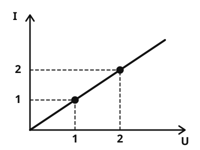

Ohm's law
The idea
You connect a resistor to a battery and measure. With twice the voltage, twice as much current flows. The ratio of voltage to current stays the same: it is the resistance. This relation is Ohm's law.
What to remember
- Ohm's law
For an ohmic resistor the voltage divided by the current is always the same: . The resistance does not change when you change the voltage.
The unit: 1 Ω = 1 V : 1 A. Convert the current to amperes first, not milliamperes.
- Characteristic curve
A characteristic curve shows how the current depends on the voltage. For an ohmic resistor it is a straight line through the origin.

The characteristic curve of an ohmic resistor is a straight line through the origin: twice the voltage gives twice the current. The digits 1 and 2 stand for equal steps on both axes.
Source: https://github.com/lernapps/elektrizitaet. Licence: CC0-1.0.Not every part is ohmic
A bulb gets hot when it shines, and its resistance grows. Its characteristic curve is therefore bent, not a straight line. still holds for it at every single moment, but the value changes.
Example
A resistor on the battery
A resistor of 20 Ω is connected to 6 V. We want the current: . The ammeter shows 0.3 A, that is 300 mA.
Practice
Task no. 1
Task: The resistor in the circuit is unknown. Record at least three measuring points at different voltages, then calculate the resistance and enter it.
Set different voltages and record a point each time. The points show you how the current depends on the voltage.
0 measuring points recorded
Task no. 1
The resistor in the circuit is unknown. Record at least three measuring points at different voltages, then calculate the resistance and enter it.
The battery can be set from 0 to 12 V in steps of 1.5 V. The voltmeter shows the voltage across the resistor, the ammeter the current. The resistor is unknown.
Solution
For example measure at 3 V, 6 V and 9 V. At 6 V the ammeter shows 0.12 A, so R = 6 V : 0.12 A = 50 Ω. The points lie on a straight line through the origin.
Exercise
Three worked tasks, each with its solution:
Task no. 1
A resistor of 20 Ω is connected to 3 V. What is the current in amperes?
Hint
Solution
Right answer: 0.15 A
Task no. 2
A resistor of 100 Ω is connected to 3 V. What is the current in amperes?
Hint
Solution
Right answer: 0.03 A
Task no. 3
A resistor of 20 Ω is connected to 9 V. What is the current in amperes?
Hint
Solution
Right answer: 0.45 A
Exercise
Three worked tasks, each with its solution:
Task no. 1
An resistor has 9 V across it, and the ammeter shows 0.6 A. What is the resistance in Ω?
Hint
Solution
Right answer: 15 Ω
Task no. 2
An resistor has 9 V across it, and the ammeter shows 0.2 A. What is the resistance in Ω?
Hint
Solution
Right answer: 45 Ω
Task no. 3
An resistor has 3 V across it, and the ammeter shows 0.3 A. What is the resistance in Ω?
Hint
Solution
Right answer: 10 Ω
Exercise
Solution
Right answer: The statement is true.
Because the ratio stays the same, the current grows in step with the voltage. The characteristic curve is a straight line through the origin.
More on it: